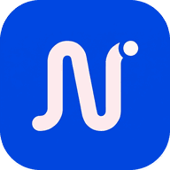

Pas de connexion
Cette page n'a pas encore été ouverte sur cet appareil : elle n'est pas disponible hors ligne. Les pages déjà consultées et vos saisies restent accessibles depuis l'accueil.
You are offline. This page has not been opened on this device yet. Pages you have already visited remain available from the home page.